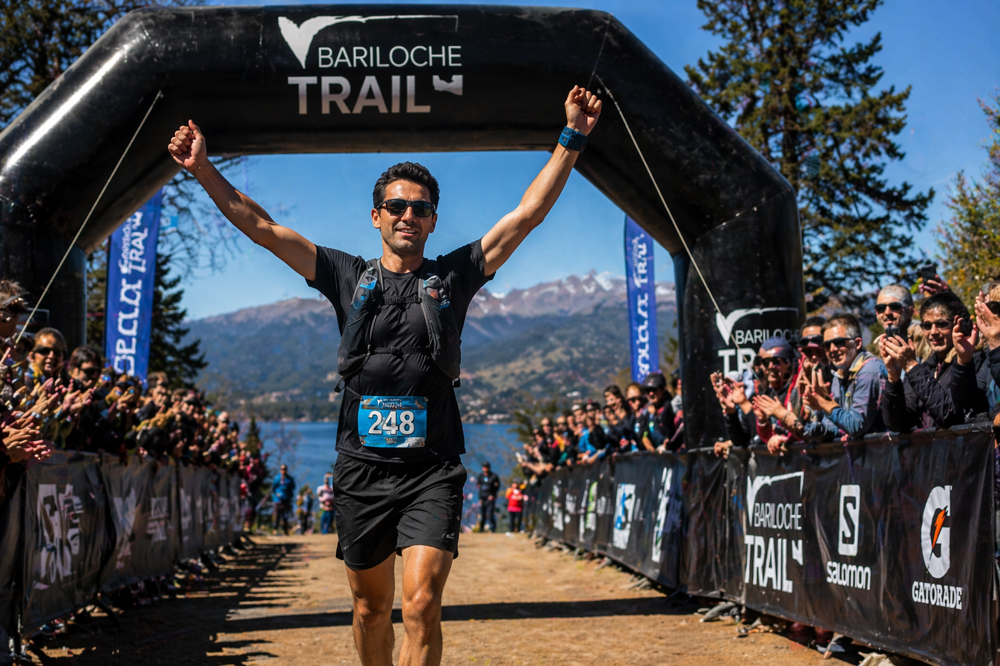
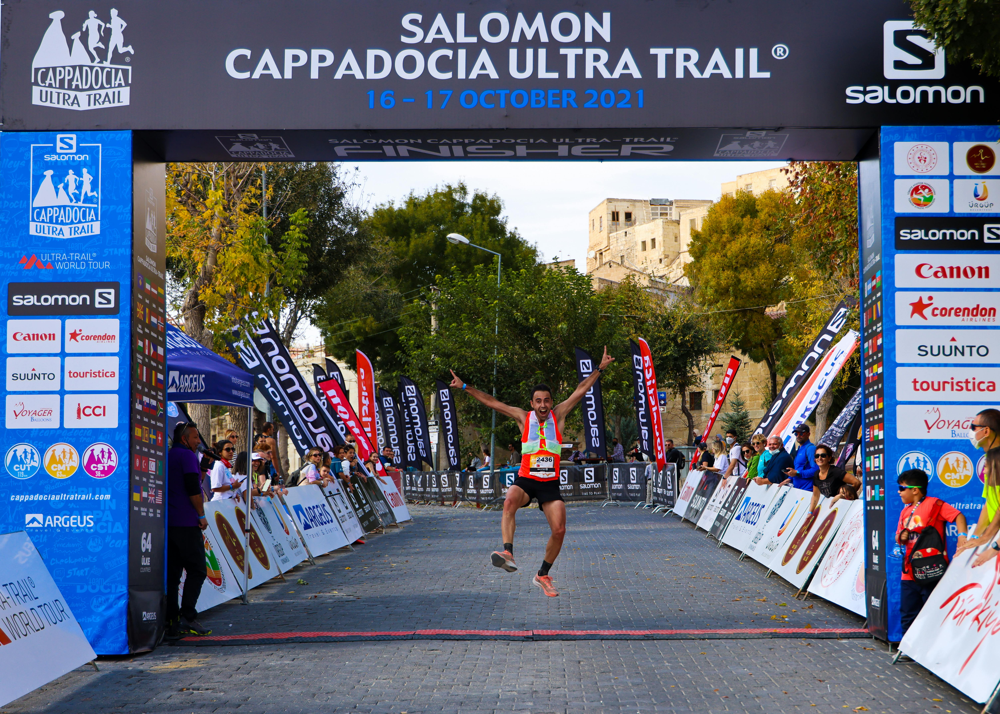
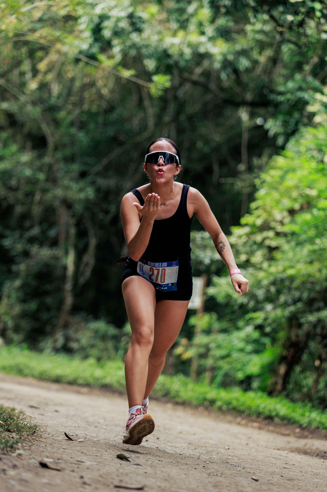
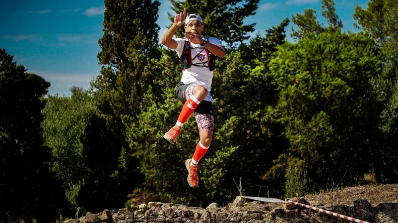

EDICION 2021






Los circuitos recorren senderos de montaña, caminos técnicos y sectores de bosque nativo, con vistas abiertas al paisaje patagónico. Cada distancia presenta desniveles acumulados exigentes, ascensos sostenidos y descensos rápidos que pondrán a prueba tu resistencia, estrategia y técnica en terreno irregular.